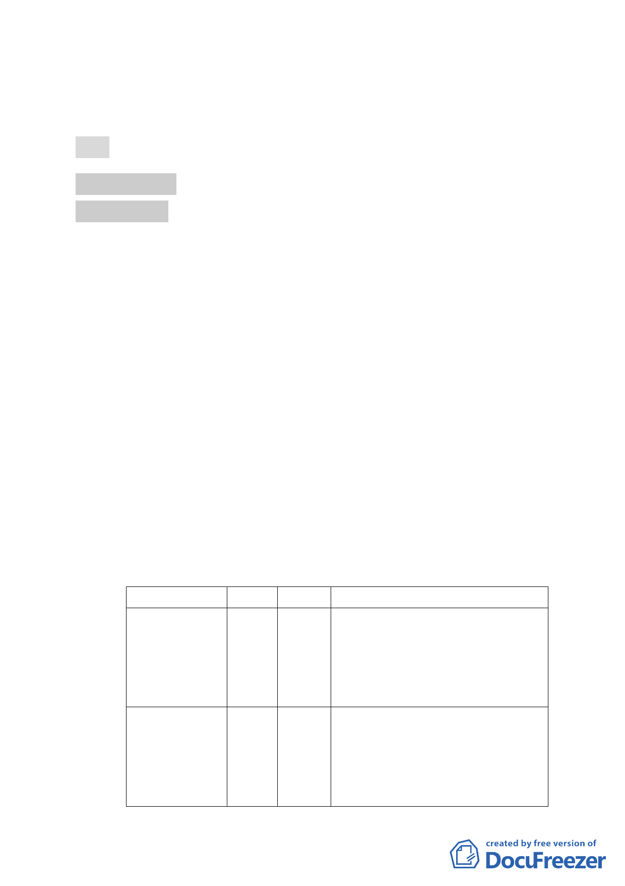

地為體育場用地及道路用地主要計畫案」1 案，不再續行都市
計畫法定程序。
決議：本案洽悉備查。
參、審議事項
審議事項 一
案名：擬定臺北市南港區鐵路地下化沿線土地（編號 BR-1 原臺鐵
調車場公園以西部分）細部計畫案
案情概要說明：
一、市府 101 年 4 月 10 日公告實施之「變更臺北市南港區鐵路地
下化沿線土地主要計畫案」內規定，本細部計畫範圍（編號
BR-1），原則同意變更為商業區及道路用地，惟應俟細部計畫
審定，始核定主要計畫。市府原依都市計畫法第 22 條規定擬
定本細部計畫。
二、計畫面積：約 5.4 公頃。
三、計畫內容：
（一）擬定使用分區為特定商業區（三）及特定商業區（四）。
（二）土地使用分區管制：
1.建蔽率及容積率：
使用分區名稱
特定商業區(三)
特定商業區(四)
建蔽率
55%
55%
容積率
300%
300%
備註
1. 依原使用分區(策略型工業區(原屬
工三))辦理。
2. 建蔽率以 55%為原則，得經臺北市
都市設計及土地使用開發許可審
議委員會審議同意後予以放寬，但
最高不得超過 65%。
1. 依原使用分區(策略型工業區(原屬
工三))辦理。
2. 建蔽率以 55%為原則，得經臺北市
都市設計及土地使用開發許可審
議委員會審議同意後予以放寬，但
最高不得超過 65%。
-4-